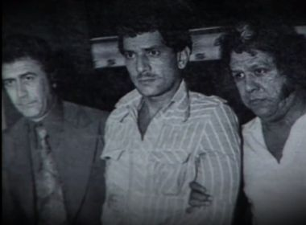
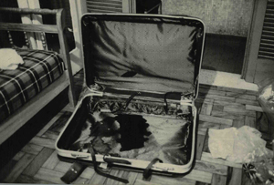
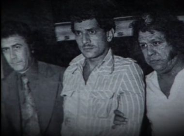
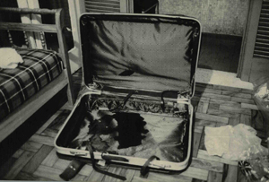

Francisco da Costa Rocha, conhecido como Chico Picadinho (Vila Velha, 27 de abril de 1942), é um assassino brasileiro que foi condenado pelos assassinatos de duas mulheres, em 1966 e 1976, respectivamente. O caso foi listado pelo portal de notícias g1 de São Paulo, em 2014, como "9 casos de assassinos que chocaram o país com seus crimes".
Nascido e criado em Vila Velha, no Estado do Espírito Santo, teve uma infância muito pobre. Seu pai era exportador de café e o abandonou ainda criança, junto de sua mãe. Tendo que trabalhar, ela deixava Francisco com uma amiga na cidade de Cariacica.
Nas entrevistas, o assassino revelou ter sofrido diversos abusos sexuais do marido da mulher que cuidava dele, mas que esta nunca soube, e que ficava semanas sem ver a mãe, já que ela raramente ia visitá-lo, além de diariamente ver este homem, que abusava dele, e espancava essa amiga de sua mãe. Além disso, quando desobedecia, ele apanhava muito da mesma mulher.
Um de seus passatempos na infância era algo muito cruel: matar gatos. Após crescer um pouco, voltou a viver com a mãe em Vila Velha, onde presenciava a visita de diversos homens em casa, quando ela o mandava ir para o quarto e só sair de lá após amanhecer. Isso o fez perceber que ela se prostituía para sustentá-los. Saber deste fato, somado aos abusos que sofreu, foi um grande trauma para ele, que culminaria numa explosão de ódio futuramente.
Juventude
Na adolescência, foi expulso de casa, após brigas com a mãe, quando a humilhava e era agressivo. Passou a viver de pequenos serviços e alguns furtos, e logo viciou-se em bebida alcoólica e outras drogas. Bissexual assumido, revelou à junta psiquiátrica, após ser preso pelos crimes, que não se importava em ser passivo ou ativo, o importante era continuar sendo homem e ter muito prazer. Gastava grande parte de seu dinheiro com jogos de azar e prostitutas. Também revelou ter esquartejado as mulheres por ter muita raiva dos abusos que sofria na infância e por sentir vergonha ao lembrar-se de que a mãe se prostituía, como as mulheres que ele matou.
 


